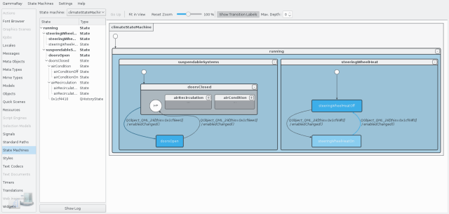

The state machine debugger allows you to graphically observe the configuration of state machines in realtime.

The following state machine frameworks are supported:
If your target contains multiple state machine instances, the currently displayed one can be selected in the combo box on the top left.
The following examples make use of the state machine debugger: